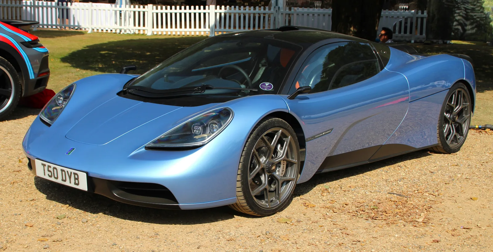

▲ 고든 머레이 오토모티브(GMA)가 공개한 신형 슈퍼카 티저 이미지. 기존 T.50과는 별개의 새로운 프로젝트다
고든 머레이 오토모티브(GMA)가 정체를 알 수 없는 새로운 슈퍼카의 티저 이미지를 공개했습니다. 맥라렌 F1 설계자로 잘 알려진 고든 머레이가 이끄는 이 회사는, 2026년 8월 14일 미국 캘리포니아에서 열리는 클래식카 행사 '더 쿠에일: 어 모터스포츠 개더링'에서 이 차를 정식 공개할 예정입니다. GMA는 이 차를 "가장 배타적이고 가벼우며 운전자 중심의 슈퍼카"라고 소개했습니다.
1. 헤드라이트가 있다? — 티저가 남긴 단서들
공개된 티저 이미지만으로도 몇 가지 단서를 읽어낼 수 있습니다. 전체적인 비례는 GMA의 한정판 모델 S1 LM과 유사하지만, 전면부는 확연히 다른 독자적인 설계를 취하고 있습니다. 특히 눈에 띄는 것은 전통적인 형태의 헤드라이트입니다. 여기에 길게 뻗은 윈드실드와 두드러진 프론트 펜더, 지붕에 장착된 인테이크, 도어에 새겨진 NACA 덕트가 확인됩니다. 후면부는 윙이 없는 깔끔한 형태로, 맥라렌 F1과 S1 LM 양쪽의 디자인 유산을 동시에 계승하는 듯한 인상을 줍니다.

▲ GMA T.50. 이번 신형 슈퍼카는 T.50과는 별개의 프로젝트로 확인됐다
2. 맥라렌 F1의 유산 — 왜 계속 3인승, V12를 고집하나
고든 머레이는 1992년 맥라렌 F1을 설계하며 센터 드라이빙 포지션, 자연흡기 V12 엔진, 극단적인 경량화라는 철학을 자동차 역사에 각인시켰습니다. 이후 설립한 GMA에서도 T.50과 S1 LM을 통해 이 철학을 그대로 계승해왔습니다. 이번 신형 슈퍼카 역시 아직 파워트레인이 공식 발표되지 않았지만, 참고 모델인 S1 LM이 4.3리터 자연흡기 V12 엔진으로 710마력을 냈다는 점을 감안하면 비슷한 방향성을 취할 가능성이 높습니다. 전동화가 대세인 슈퍼카 시장에서, GMA는 여전히 순수 내연기관과 수동변속기라는 정체성을 고수하고 있습니다.
| 모델 | 엔진 | 출력 | 참고 가격 |
|---|---|---|---|
| S1 LM(1호차) | 4.3L 자연흡기 V12 | 710마력 | $20,630,000 |
| T.50 | 3.9L 자연흡기 V12 | 654마력 | 약 $3,100,000 |
| 신형 슈퍼카(미공개) | 미공개 | 미공개 | 미공개 |

▲ T.50의 자연흡기 V12 엔진룸. GMA는 전동화 시대에도 순수 내연기관과 경량화 철학을 고수해왔다
3. S1 LM이 보여준 GMA 한정판의 가치
GMA의 한정판 모델들이 어떤 가격대를 형성하는지는 S1 LM이 잘 보여줍니다. 이 모델의 1호차는 경매에서 2,063만 달러(약 280억 원)에 낙찰되며 화제를 모은 바 있습니다. 이는 단순히 빠른 차가 아니라, 극소량만 생산되는 희소성과 고든 머레이라는 이름이 가진 상징성이 결합된 결과입니다. 이번 신형 슈퍼카 역시 정식 공개 전부터 컬렉터들 사이에서 상당한 관심을 받고 있으며, 극히 제한된 생산 대수와 높은 가격대가 예상됩니다.

▲ 페블비치에 전시된 GMA T.50. 신형 슈퍼카도 이런 클래식카 행사 무대에서 첫선을 보일 예정이다
4. 서리(Surrey)의 작은 공방에서 만드는 슈퍼카
고든 머레이 오토모티브는 2017년 설립된 비교적 젊은 회사입니다. 영국 서리주 윈들셤에 기반을 두고 있으며, 2022년부터는 서리 하이엄스 파크에 새로운 본사 겸 생산시설을 구축해 2024년 완공했습니다. F1 팀과 맥라렌에서 수석 디자이너로 활동했던 고든 머레이 개인의 명성에 의존하는 소규모 제작사이지만, 극소량 생산·초고가 정책을 통해 대형 완성차 업체들과는 다른 방식으로 슈퍼카 시장에서 확고한 입지를 다져왔습니다.
5. 정리 — 8월 14일, 베일을 벗는다
정확한 차명, 스펙, 가격은 아직 베일에 싸여 있습니다. 그러나 티저 이미지에 담긴 디자인 단서들과 GMA의 기존 라인업을 종합하면, 이 차 역시 극도로 가벼우면서 운전자 중심의 순수 드라이빙 경험을 지향할 것이라는 점은 분명해 보입니다. 더 쿠에일에서의 정식 공개까지 이제 며칠 남지 않은 만큼, 고든 머레이가 이번에는 또 어떤 카드를 꺼내들지 업계의 관심이 집중되고 있습니다.